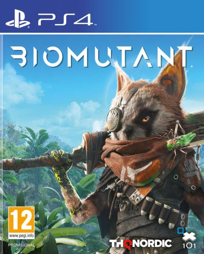
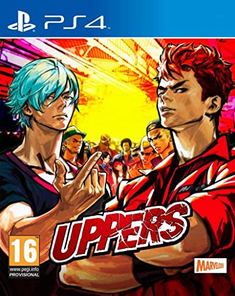
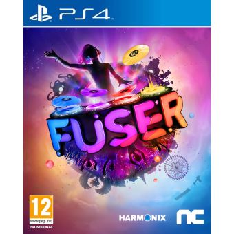

Biomutant

Description:
BIOMUTANT® est un RPG post-apocalyptique en monde ouvert mâtiné de kung-fu bénéficiant d'un système de
combat d'arts martiaux unique, mêlant corps à corps, tir et pouvoirs mutants.
Une épidémie sème la mort et l'Arbre-de-Vie dépérit. Les tribus sont divisées. Explorez un monde en
plein chaos et déterminez son avenir : serez-vous un sauveur ou le plongerez-vous vers un destin plus
sombre encore ?
Bande-annonce:
Uppers

Description:
Se situant sur les îles désertes de Last Resort, UPPERS vous permet de contrôler jusqu’à 13 personnages
perpétuellement en combat contre des bandits assoiffés de bagarre qui parcourent librement l’île à la
recherche de problèmes, accompagnés de leur harem de filles aimant les sensations fortes et déterminées
à voir leur petit ami comme le vainqueur.
Bande-annonce:
Overkill's The Walking Dead

Description:
REFLECHISSEZ. COMBATTEZ. VIVEZ. OVERKILL's The Walking Dead est un jeu d'action et de tir à la première
personne en coop pour quatre joueurs, où vous affrontez aussi bien les morts que les vivants. Dans
l'univers de The Walking Dead, votre groupe et vous essayez de survivre dans une Washington D.C. aux
allures post-apocalyptiques. Quatre joueurs forment une équipe étroitement soudée , Aidan, Heather, Maya
et Grant. Chaque personnage possède un arbre de compétences, un rôle dans l'escouade, un style de jeu et
une histoire qui lui sont propres. Désormais, tous partagent un objectif commun, où survie et travail
d'équipe sont primordiaux.
Bande-annonce:
Shovel Knight: Treasure Trove

Description:
Shovel Knight: Treasure Trove est l’édition complète et définitive de Shovel Knight, un jeu d’action
aventure classique ébouriffant, doté d’une jouabilité impressionnante, de personnages mémorables, le
tout servi par une esthétique rétro 8 bits.
Bande-annonce:
Outriders - Deluxe Edition

Description:
Incarnez un Outrider, l'avant-garde de la force de colonisation d'Enoch. Altéré par l'Anomalie, vos
pouvoirs vont grandissant à mesure que vous explorez cette planète hostile.
Bande-annonce:
Atelier Ryza 2: Lost Legends & The Secret Fairy

Description:
Explorez de tout nouveaux lieux et percez les secrets entourant les mystérieuses ruines de la capitale
ashra-am et de l’étrange entité féérique nommée Fi. Découvrez des environnements et paysage coloré de
toute beauté ! Plongez et explorez les fonds marins, de nombreux trésors, matériaux et même des donjons
se trouvent sous la surface et n’attendent qu’à être découvert !
Bande-annonce:
Atelier Ryza 2: Lost Legends & The Secret Fairy

Description:
Engendrée dans un acte de terrorisme vampire, votre existence déclenche une guerre commerciale du sang à
Seattle. Formez de fragiles alliances avec les créatures qui contrôlent la ville, et dévoilez la vaste
conspiration plongeant Seattle dans une lutte sanglante entre ses puissantes factions de vampires.
Bande-annonce:
The Station Deluxe Edition

Description:
The Station est un jeu de piste à la première personne inspirée de la science-fiction dont l'intrigue se
déroule dans une station spatiale, envoyée dans le but d'étudier une civilisation extra-terrestre
évoluée. Le joueur endosse le rôle d'un spécialiste de la reconnaissance et doit élucider un mystère
dont l'issue déterminera le sort de deux civilisations.
Bande-annonce:
Fuser

Description:
Par les créateurs de Rock Band™ et Dance Central™, FUSER™ vous fait vivre une nouvelle expérience
musicale effrénée où vous contrôlez le son ! Créez vos propres morceaux en mixant des éléments des
titres internationaux les plus populaires, ou collaborez avez des amis pour produire des titres
mémorables, puis partagez vos créations et vos performances avec le reste du monde !
Bande-annonce:
Dead Island 2

Description:
La Californie ! Une vaste zone à explorer et un cadre original pour un jeu de survie : découvrez cet
état emblématique transformé en terrain de chasse aux zombies
Bande-annonce: